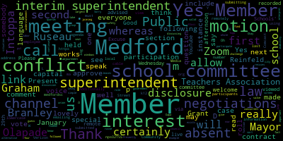
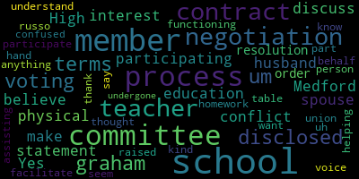

[Intoppa]: and broadcasting to YouTube.
[Ruseau]: Good afternoon, everyone. I'd like to welcome you to the January 29, 2025, 3.30 p.m. special meeting of the Medford School Committee. Excuse me. Please be advised that on Wednesday, January 29th, 2025, at 3.30 p.m., there will be a special meeting of the school committee held for remote participation via Zoom. This meeting is being recorded. The meeting can be viewed live on Medford Public Schools' YouTube channel through Medford Community Media on your local cable, Comcast Channel 9, 8 or 22, and Verizon Channel 43, 45, and 47 channel. Since the meeting will be held remotely, participants can log or call in by using the following link or call-in number. The Zoom link is, one second, see if I can view the link. Oh, https://nps02155-org.zoom.us A, D, D, N, A, W, M, capital L, lowercase g, capital Y. Additionally, comments or questions can be submitted during the meeting by emailing medfordsc at medford.k12.ma.us. Those submitting must include the following information, your first and last name, your Medford Street address, or if you're an employee at Medford Public Schools, your question or comment. The agenda is of a roll call. And then we'll be discussing a conflict of interest disclosure with the interim superintendent of schools, followed by adjournment. I could take the role once I find my seat. There it is. Member Branley?
[Branley]: Present.
[Ruseau]: Member Grant?
[Unidentified]: Here.
[Ruseau]: Member Topp? Present. Member Olapade? He's joining me, but I'll put him as absent for now. Member Reinfeld?
[Graham]: Here.
[Ruseau]: Member Ruseau, present. Mayor Leung, concurrent. Presently absent. Okay. So next up is the committee of windows. Sorry. It's the discussion about the conflict of interest disclosure from the interim superintendent. I guess we could hand that over to our interim superintendent, Dr. Glusi.
[Galusi]: Yes, so I'm disclosed to members of the school committee that my spouse husband is a Medford High School physical education teacher. And so I just disclosed the conflict of interest in terms of being participating in the teacher negotiation process. And I do believe that I have some I had to make this statement and have the school committee discuss the resolution in order for me to participate in the process, the negotiations.
[Ruseau]: I'll jump in and say that I certainly, well, thank you for this. I certainly think that we should vote to allow the interim superintendent to participate in negotiations. It would be a challenge as an understatement to not have your voice in the negotiations with our largest labor union. So that's all I have to say. And I don't know if Member Graham can see the screen. I certainly can. So I'll just call on Member Intoppa.
[Intoppa]: Thank you, Member Ruseau. So my question, so I know I had to do the disclosure because of my own cousin-in-law, long lost union. But to me, this seems like direct conflict of interest law, like the disclosure is only if you're not affected by conflict of interest. And someone may think that you, like, that's just my interpretation. So while I do think it would be, you know, beneficial, I don't understand how us voting goes around the law and what it's set forth by. I mean, I'm sure, I'm sure, Dr. Galusi, you've seeked, you know, legal counsel on this, but I just don't understand how Because if the mayor has to recuse herself, member Branley might have to both because they have siblings like that doesn't bring financial. It doesn't affect the finances of the household. And this does. Right?
[Ruseau]: Member Dapa, if I may. So the conflict of interest law includes this whole section that allows for, for instance, the very simple example is that the city council is the only group that can give themselves a raise. They're all in conflict. The conflict of interest law does in fact allow for when no other alternative exists. So if four members of the school committee, for instance, were to have conflicts during negotiations, would not have a quorum that could vote to approve a contract. So in that case, the conflict of interest law has sort of a safety valve. Otherwise, there would be just an inability for government to function. And so in this case, that's how I interpret this situation, is that the The superintendent, if she recuses herself, leaves us with the most important and only valid voice, because she's the only one who works for us. We could not continue with negotiations. So that's my interpretation of how that works.
[Galusi]: and i know member graham um has her hand raised i would also just kind of say that um i'm not a voting person the contract this the negotiation process it is a contract between the teachers union and the school committee so for me it's just the voice at the table in terms of uh to member russo's part on behalf of the the schools and the functioning of the schools but i'm also not a voting member on the contract i'm just assisting and helping with the school committee facilitate the process i understand so thank you because that that i don't i don't want it to seem like i that you didn't that i thought you didn't do your homework or anything i was just confused because i've undergone
[Intoppa]: this training for like four years now and I just never knew of the safety net because it's been something that's been a concern of mine as a city and state employee but I'm glad to hear that because that makes sense there had to be there'd have to be some form of safety net built in because again like if everyone had conflict on the committee we didn't have quorum what we do um so yeah I just had a question that that was that was a question is how what is the the statute and precedent set forth by this so that makes sense though so thank you.
[Ruseau]: Member Grant.
[Graham]: Yes, I was going to say the same thing. I think the key differentiator between Dr. Lucy and others who may have conflicts are that she is not a contract holder, right? So she doesn't have the voting authority to approve a contract. So she therefore is sort of in a different lane of conflict of interest than the rest of us are. members. So I forwarded you an email from Attorney Greenspan, who was not able to be here today. And there's a specific paragraph that I think would be useful to read out loud. That is the official to 68, a disclosure, whatever it's called, before we call a vote. And then the way attorney Greenspan explained it to both myself and Dr. Lucy, they, they will, she will also file paperwork with the clerk. And, and he also reminded me that there have been other superintendents here in Medford in this exact same situation, this is the process. So it's not unusual in the superintendent's ranks to come across.
[Ruseau]: Thank you. I will read that, but first I'll let member Brandly speak next.
[Branley]: Hiya. So yes, I was going to say the same as I think that Dr. Glucy said. It's different when you're a voting member, which is why I do have to step away from the table. I did talk to ethics the other day again, and the factor is the voting member. So I will step away from the table just like the mayor's doing. And then obviously when budget season comes, I can vote, but we just have to remove that section like we did last time to elementary. And so I just wanna let you know my update and then say the same thing about having the difference being the voting member. So that was my two cents.
[Ruseau]: Thank you. I'm just going to read this language that we've received from our attorney. The motion, which if somebody can. I'm not really the chair so I can just make this motion and then somebody can second it and I don't have to keep reading it because it's a little long. The motion is, whereas the superintendent of schools has made a full disclosure that her spouse is a member of the Medford Teachers Association and has a financial interest in the contract between the Medford School Committee and the Medford Teachers Association, and whereas the school committee has determined that the superintendent's interest is not so substantial as to be deemed likely to affect the integrity of the services which the school committee may expect from the superintendent, and whereas the school committee approves the superintendent's participation in collective bargaining with the Medford Teachers Association, pursuant to general law chapter 268A, section 19B. That is the motion. And Mr. Tapa.
[Intoppa]: Yeah, sorry. I just wanted to also, so thank you to my colleagues for explaining the voting piece, because that wasn't explained when I spoke with the attorney the other day. So this makes complete sense. So I just Yeah, I factored into every other conflict of interest saying we have to recuse ourselves, but that makes sense. So with that being said, I can second the motion.
[Ruseau]: Is there any other conversation? Is there any members of the public that would like to speak? I don't think there are members of the public that are meeting. All right, well, and in light of the motion being made and seconded, I'll do a roll call. Member Branley? Yes. Member Graham?
[Graham]: Yes.
[Ruseau]: Member Intoppa? Yes. Member Olapade? Yes. Member Reinfeld?
[Unidentified]: Yes.
[Ruseau]: Member Ruseau, yes. And Mayor Lungo-Koehn is absent. Wonderful. That was lovely. I am really, really glad that there was language redrafted. So I would entertain a motion to adjourn.
[Unidentified]: Motion to adjourn.
[Ruseau]: I second. Who was the first?
[Galusi]: Member Graham.
[Ruseau]: Thank you. Member Branley. Yes. Member Graham.
[Graham]: Yes.
[Ruseau]: Member Intoppa. Yes. Member Olapade. Yes. Member Rideville. Yes. Member Ruseau. Yes. Mayor Lingo Kern is absent. Thank you, everyone. This meeting is adjourned. Have a lovely day.
[Unidentified]: Thanks.
|
total time: 1.81 minutes total words: 325 |
total time: 6.32 minutes total words: 841  |
total time: 0.69 minutes total words: 121 |
total time: 1.07 minutes total words: 175 |
|
total time: 1.48 minutes total words: 208  |
|||
{kind=link}
{kind=link}
{kind=link}
{kind=link}
{kind=link}